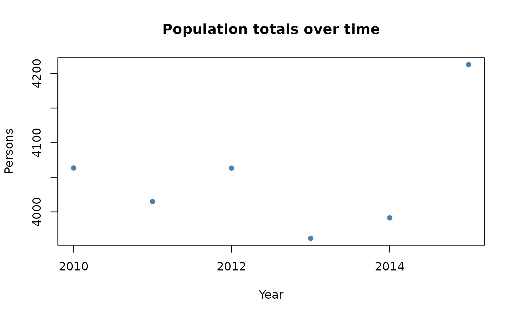

Introduction
In the following we will demonstrate an idealized workflow based on a subset of the WorldPop data set that is delivered together with this package. You can follow along the code snippets below to reproduce the results. Please note that to reduce the time it takes to process this vignette, we will not download any resources from the internet. In a real use case, thus processing time might substantially increase because resources have to be downloaded and real portfolios might be larger than the one created in this example.
This vignette assumes that you have already followed the steps in Installation and have familiarized yourself with the terminology used in the package. If you are unfamiliar with the terminology used here, please head over to the Terminology article to learn about the most important concepts.
The idealized workflow for using mapme.biodiversity consists of the following steps:
- prepare your sf-object containing only geometries of type
'POLYGON'or'MULTIPOLYGON' - decide which indicator(s) you wish to calculate and make the required resource(s) available
- conduct your indicator calculation, which adds a nested list column to your portfolio object
- continue your analysis in R or decide to export your results to a spatial data format to use it with other geospatial software
Getting started
First, we will load the mapme.biodiversity and the sf package for handling spatial vector data. For tabular data handling, we will also load the dplyr and tidyr packages. Then, we will read an internal GeoPackage which includes the geometry of a protected area in the Dominican Republic from the WDPA database.
library(mapme.biodiversity)
library(sf)
library(dplyr)
library(tidyr)
aoi_path <- system.file("extdata", "sierra_de_neiba_478140.gpkg", package = "mapme.biodiversity")
aoi <- st_read(aoi_path, quiet = TRUE)
aoi
#> Simple feature collection with 1 feature and 4 fields
#> Geometry type: MULTIPOLYGON
#> Dimension: XY
#> Bounding box: xmin: -71.80933 ymin: 18.57668 xmax: -71.33201 ymax: 18.69931
#> Geodetic CRS: WGS 84
#> WDPAID NAME DESIG_ENG ISO3 geom
#> 1 478140 Sierra de Neiba National Park DOM MULTIPOLYGON (((-71.76134 1...The sf-object contains a single object of geometry type
'MULTIPOLYGON'. Each of these polygons will be processed
individually before the results are combined and returned. The
sf object also contains some metadata (e.g. its WDPAID and
its name), that will be retained throughout the complete workflow.
Setting standard option
We use the mapme_options() function and set some
arguments, such as the output directory, that are important to govern
the subsequent processing. For this, we create a temporary directory.
Internally, to save time on downloading when building this vignette, we
copied already existing files to that output location (code not shown
here).
outdir <- file.path(tempdir(), "mapme-resources")
dir.create(outdir, showWarnings = FALSE)
mapme_options(
outdir = outdir,
verbose = TRUE
)The outdir argument points towards a directory on the
local file system of your machine. All downloaded resources will be
written to respective directories nested within outdir.
Once you request a specific resource for your portfolio, only those
files will be downloaded that are missing to match its spatio-temporal
extent. This behavior is beneficial, e.g. in case you share the
outdir between different projects to ensure that only
resources matching your current portfolio are returned.
The verbose logical controls whether or not the package
will print informative messages during the calculations. Note, that even
if set to FALSE, the package will inform users about any
potential errors or warnings.
Getting the right resources
You can check which indicators are available via the
available_indicators() function:
available_indicators()
#> # A tibble: 25 × 3
#> name description resources
#> <chr> <chr> <list>
#> 1 active_fire_counts Number of detected fires by NASA FIRMS <tibble>
#> 2 biome Areal statistics of biomes from TEOW <tibble>
#> 3 deforestation_drivers Areal statistics of deforestation drivers <tibble>
#> 4 drought_indicator Relative wetness statistics based on NASA GR… <tibble>
#> 5 ecoregion Areal statstics of ecoregions based on TEOW <tibble>
#> 6 elevation Statistics of elevation based on NASA SRTM <tibble>
#> 7 fatalities Number of fatalities by group of conflict ba… <tibble>
#> 8 gsw_change Statistics of the surface water change layer… <tibble>
#> 9 gsw_occurrence Areal statistic of surface water based on oc… <tibble>
#> 10 gsw_recurrence Areal statistic of surface water based on re… <tibble>
#> # ℹ 15 more rows
available_indicators("population_count")
#> # A tibble: 1 × 3
#> name description resources
#> <chr> <chr> <list>
#> 1 population_count Statistic of population counts <tibble [1 × 5]>Say, we are interested in the population_count
indicator. We can learn more about this indicator and its required
resources by using either of the commands below or, if you are viewing
the online version, head over to the population_count
documentation.
?population_count
help(population_count)By inspecting the help page we learned that this indicator requires
the worldpop resource and it requires to specify two extra
arguments: the population statistic to calculate and the eninge to be
used for the calculation (learn more about engines here).
With that information at hand, we can start to retrieve the required
resource. We can learn about all available resources using the
available_resources() function:
available_resources()
#> # A tibble: 23 × 5
#> name description licence source type
#> <chr> <chr> <chr> <chr> <chr>
#> 1 chirps Climate Hazards Group … CC - u… https… rast…
#> 2 esalandcover Copernicus Land Monito… CC-BY … https… rast…
#> 3 fritz_et_al Drivers of deforestati… CC-BY … https… rast…
#> 4 gfw_emissions Global Forest Watch - … CC-BY … https… rast…
#> 5 gfw_lossyear Global Forest Watch - … CC-BY … https… rast…
#> 6 gfw_treecover Global Forest Watch - … CC-BY … https… rast…
#> 7 global_surface_water_change Global Surface Water -… https:… https… rast…
#> 8 global_surface_water_occurrence Global Surface Water -… https:… https… rast…
#> 9 global_surface_water_recurrence Global Surface Water -… https:… https… rast…
#> 10 global_surface_water_seasonality Global Surface Water -… https:… https… rast…
#> # ℹ 13 more rows
available_resources("worldpop")
#> # A tibble: 1 × 5
#> name description licence source type
#> <chr> <chr> <chr> <chr> <chr>
#> 1 worldpop WorldPop - Unconstrained Global Mosaics 2000 - … CC-BY … https… rast…For the purpose of this vignette, we are going to download the
worldpop resource. We can get more detailed information
about a given resource, by using either of the commands below to open up
the help page. If you are viewing the online version of this
documentation, you can simply head over to the worldpop
resource documentation.
?worldpop
help(worldpop)We can now make the worldpop resource available for our
portfolio. We will use a common interface that is used for all
resources, called get_resources(). We have to specify our
portfolio object and supply one or more resource functions with their
respective arguments. This will then download the matching resources to
the output directory specified earlier.
aoi <- get_resources(x = aoi, get_worldpop(years = 2010:2015))
#> Skipping existing files in output directory.In case you want to download more than one resource, you can use the same interface and the resources will be made available sequentially. Required arguments for a resource are simply added as usual:
aoi <- get_resources(
x = aoi,
get_worldpop(years = 2010:2015),
get_gfw_treecover(version = "GFC-2021-v1.9")
)Calculate specific indicators
The next step consists of calculating specific indicators. Note that
each indicator requires one or more resources that were made available
via the get_resources() function explained above. You will
have to re-run this function in every new R session, but note that data
that is already available will not be re-downloaded.
Here, we are going to calculate the population_count
indicator which is based on the worldpop resource. Since
the resource has been made available in the previous step, we can
continue requesting the calculation of our desired indicator. Note the
command below would issue an error in case a required resource has not
been made available via get_resources() beforehand.
aoi <- calc_indicators(aoi, calc_population_count(engine = "zonal", stats = "sum"))
#> Found a column named 'assetid'. Overwritting its values with a unique identifier.Now let’s take a look at the results. In addition to the metadata we
are already familiar with, we see that there is an additional column
called population_count which contains a
tibble.
aoi
#> Simple feature collection with 1 feature and 6 fields
#> Geometry type: MULTIPOLYGON
#> Dimension: XY
#> Bounding box: xmin: -71.80731 ymin: 18.57734 xmax: -71.33268 ymax: 18.69799
#> Geodetic CRS: WGS 84
#> # A tibble: 1 × 7
#> WDPAID NAME DESIG_ENG ISO3 assetid population_count
#> <dbl> <chr> <chr> <chr> <int> <list>
#> 1 478140 Sierra de Neiba National Park DOM 1 <tibble [6 × 4]>
#> # ℹ 1 more variable: geom <MULTIPOLYGON [°]>The indicator is represented as a nested-list column in our
sf-object that is named alike the requested indicator. For
our single asset, this column contains a tibble with 6 rows and four
columns. Let’s have a closer look at this object
aoi$population_count
#> [[1]]
#> # A tibble: 6 × 4
#> datetime variable unit value
#> <date> <chr> <chr> <dbl>
#> 1 2010-01-01 population_sum count 4063.
#> 2 2011-01-01 population_sum count 4015.
#> 3 2012-01-01 population_sum count 4063.
#> 4 2013-01-01 population_sum count 3962.
#> 5 2014-01-01 population_sum count 3991.
#> 6 2015-01-01 population_sum count 4213.The tibble follows a standard output format, which is the same for
all indicators. Each indicator is represented as a tibble with the four
columns datetime, variable, unit,
and value. In case of the population indicator, the
variable is the sum of the population, its unit is a count and the value
column gives the actual number.
Let’s quickly visualize the results:

If you wish to change the layout of an portfolio, you can use
portfolio_long() and portfolio_wide() (see the
respective online
tutorial). Especially for large portfolios, it is usually a good
idea to keep the geometry information in a separated variable to keep
the size of the data object relatively small.
geoms <- st_geometry(aoi)
portfolio_long(aoi, drop_geoms = TRUE)
#> # A tibble: 6 × 10
#> WDPAID NAME DESIG_ENG ISO3 assetid indicator datetime variable unit value
#> <dbl> <chr> <chr> <chr> <int> <chr> <date> <chr> <chr> <dbl>
#> 1 478140 Sier… National… DOM 1 populati… 2010-01-01 populat… count 4063.
#> 2 478140 Sier… National… DOM 1 populati… 2011-01-01 populat… count 4015.
#> 3 478140 Sier… National… DOM 1 populati… 2012-01-01 populat… count 4063.
#> 4 478140 Sier… National… DOM 1 populati… 2013-01-01 populat… count 3962.
#> 5 478140 Sier… National… DOM 1 populati… 2014-01-01 populat… count 3991.
#> 6 478140 Sier… National… DOM 1 populati… 2015-01-01 populat… count 4213.Enabling parallel computing
mapme.biodiversity follows the parallel computing
paradigm of the {future}
package. That means that you as a user are in the control if and how you
would like to set up parallel processing. Since
{mapme.biodiversity} v0.7 supports parallel processing on a
nested-level. The outer level applies parallel processing to the assets
in a portfolio, the inner level to potential chunks for polygons that
are larger than the specified chunks size or the single components of
assets of type MULTIPOLYGON.
The maximum chunk size is specified in hectares via
mapme_options() and defaults to 100,000 ha. Polygons larger
than this threshold will be split into chunks of roughly the same
size.
Fine-control of parallel processing is given by using future topologies (find more information here). To process all assets sequentially, but allow to spawn up to 4 workers to process chunks in parallel you might specify:
As another example, with the code below one would apply parallel processing of 2 assets, with each having 4 workers available to process chunks, thus requiring a total of 8 available cores on the host machine. Be sure to not request more workers than available on your machine.
library(progressr)
plan(list(tweak(cluster, workers = 2), tweak(cluster, workers = 4)))
with_progress({
aoi <- calc_indicators(
aoi,
calc_treecover_area_and_emissions(
min_size = 1,
min_cover = 30
)
)
})
plan(sequential) # close child processesExporting an portfolio object
You can use the write_portfolio() function to save a
processed portfolio object to disk as a GeoPackage or any
other spatial format supported by GDAL. This allows sharing your data
with contributors who might not be using R, but any other geospatial
software. Simply point towards a non-existing file on your local disk to
write the portfolio. You can chose between serializing in the long or
wide data layout.
dsn <- tempfile(fileext = ".gpkg")
write_portfolio(x = aoi, dsn = dsn, format = "long", quiet = TRUE)
from_disk <- st_read(dsn, quiet = TRUE)
from_disk
#> Simple feature collection with 6 features and 10 fields
#> Geometry type: MULTIPOLYGON
#> Dimension: XY
#> Bounding box: xmin: -71.80731 ymin: 18.57734 xmax: -71.33268 ymax: 18.69799
#> Geodetic CRS: WGS 84
#> WDPAID NAME DESIG_ENG ISO3 assetid indicator datetime
#> 1 478140 Sierra de Neiba National Park DOM 1 population_count 2010-01-01
#> 2 478140 Sierra de Neiba National Park DOM 1 population_count 2011-01-01
#> 3 478140 Sierra de Neiba National Park DOM 1 population_count 2012-01-01
#> 4 478140 Sierra de Neiba National Park DOM 1 population_count 2013-01-01
#> 5 478140 Sierra de Neiba National Park DOM 1 population_count 2014-01-01
#> 6 478140 Sierra de Neiba National Park DOM 1 population_count 2015-01-01
#> variable unit value geom
#> 1 population_sum count 4063.447 MULTIPOLYGON (((-71.76202 1...
#> 2 population_sum count 4015.088 MULTIPOLYGON (((-71.76202 1...
#> 3 population_sum count 4063.247 MULTIPOLYGON (((-71.76202 1...
#> 4 population_sum count 3961.917 MULTIPOLYGON (((-71.76202 1...
#> 5 population_sum count 3991.399 MULTIPOLYGON (((-71.76202 1...
#> 6 population_sum count 4212.674 MULTIPOLYGON (((-71.76202 1...#> [1] TRUE